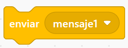
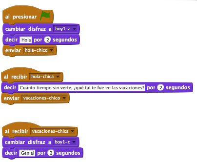

Este bloque envía un mensaje a todo el programa de Scratch. Se activarán todos los scripts de cualquier sprites que tengan el bloque «al recibir …».
Este bloque permite que los scripts envíen mensajes sin ninguna espera en su script.
Los envíos de mensajes son una buena manera de hacer que los sprites y los scripts se comuniquen.
Ejemplo:
